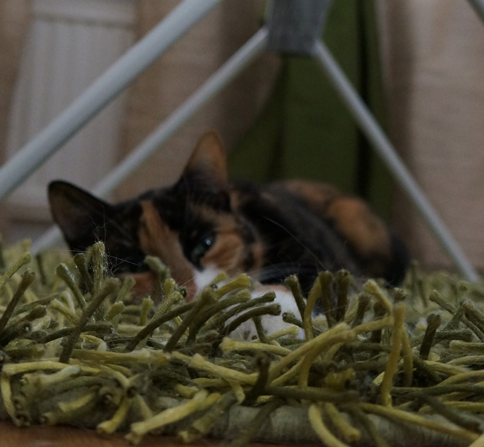
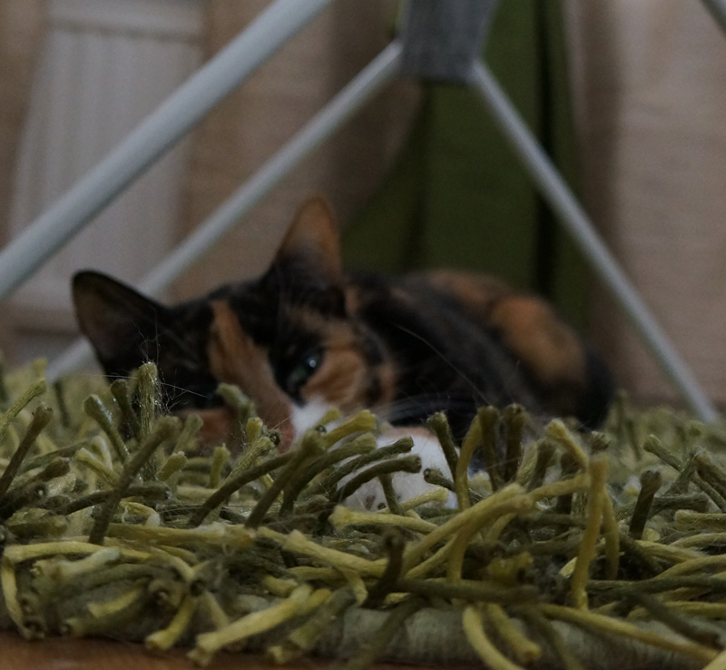

Hi, I'm Gabriella - but most people call me Gabby!
I’m a student, crazy cat person and creation lover.
I enjoy making things — whether that’s with code, yarn, a paintbrush, or pixels. I believe the best ideas come from combining creativity and curiosity. Right now, I’m on an exciting path into tech, learning and building every day.
Also: I’m a lifelong Star Wars nerd and yes — the hair color probably won’t be the same next time you meet me...
Say hi on LinkedIn

 
